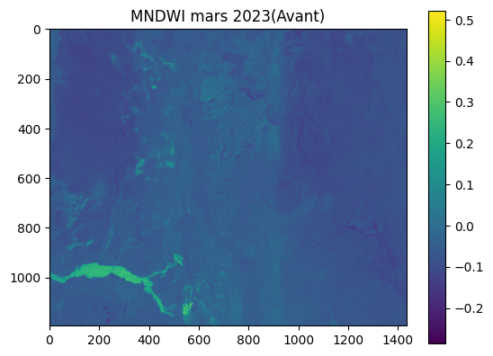
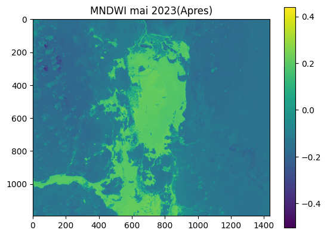

The 2023 the Piura region in Peru was severely affected by flooding, resulting from two climatic situations:
1)the El Niño phenomenon, which occurs approximately every 7 years,
2) The impact of Cyclone Yaku, which occurred between March 13 and March 16 of this year.
The region has a hot desert climate, with average annual temperatures of 27 and 25 degrees Celsius, and a rainy season from February to May..
L'objectif principal était de développer une méthodologie pour l'identification des zones inondées en utilisant Python et ses bibliothèques, ainsi que l'imagerie Landsat 8.
De cette manière, nous avons exploré les possibilités de ce langage sans nous appuyer sur des programmes spécifiques de traitement d'images, ce qui nous a permis de comprendre la portée de ce programme.
* Images de satellite LANDSAT
* Python
• Image acquisition :
xxxxx
• Image processing :
xxxxx
• Spatial analysis:
xxxxx
• Normalisation:
xxxxxx
• MNDWI calcule:
xxxxxx
• Visualization and cartography :
xxxxxxxxxx


* Agricultural monitoring
* Environmental monitoring
* Natural disaster management
* Water resource management